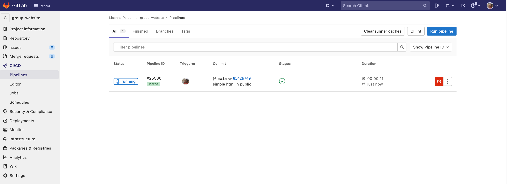
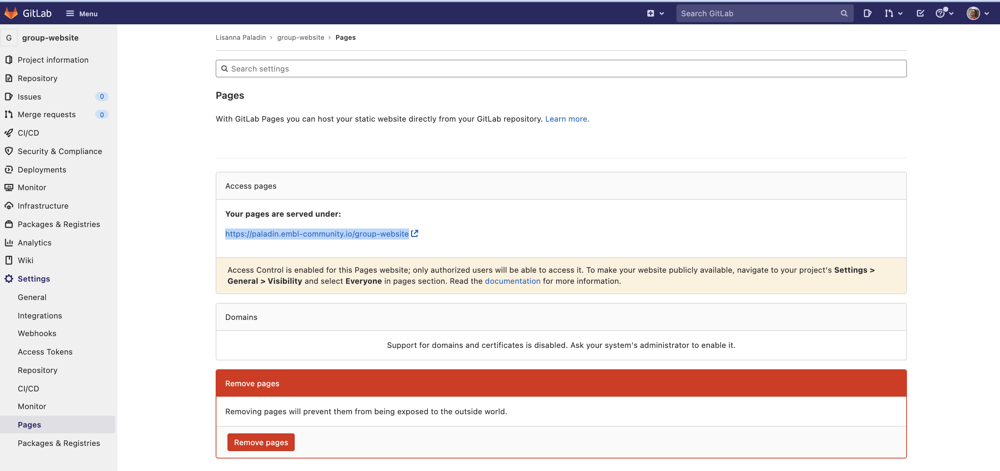
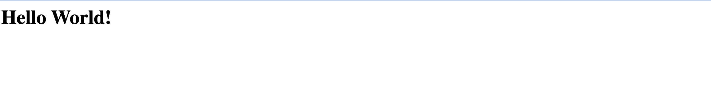

Alpha
Diese Lektion befindet sich in der Alpha-Phase, was bedeutet, dass sie bereits einmal unterrichtet wurde und die Autoren das Feedback einarbeiten.
Warum sollte ich GitHub oder GitLab Pages zum Erstellen meiner
Website verwenden?
Ziele
Erklären Sie, was ein statischer Website-Generator macht.
Wählen Sie das passende Tool für Ihre Website/Ihr Projekt aus.
Wie Websites funktionieren
Wenn wir einen Webbrowser verwenden, um eine Seite im World-Wide-Web
zu besuchen, fordert der Browser Informationen von einem Server an -
einem Computer, der die für die Website relevanten Daten speichert und
so konfiguriert ist, dass er Anfragen nach diesen Daten empfängt und
beantwortet. Unter der Annahme, dass es in dieser Phase keine Probleme
gab (z. B. die Anfrage nach einer Seite, die nicht existiert, oder die
Unmöglichkeit, den Server zu erreichen), empfängt und interpretiert
unser Browser diese Informationen, um die Webseite auf unserem
Bildschirm darzustellen.
Ein Webentwickler wäre wahrscheinlich entsetzt, wenn er eine solch
grobe Vereinfachung lesen würde, was nur ein Grund dafür ist, dass
Webentwickler nicht die Zielgruppe dieses Lehrgangs sind.
Die vom Webbrowser angezeigte Seite ist das Ergebnis der Kombination
von HTML - einem hierarchischen Format, das die
Strukturelemente der Seite und ihren Rohinhalt beschreibt - mit
CSS - einem geordneten Satz von Styling-Anweisungen,
die dem Browser mitteilen, wie der Inhalt organisiert und formatiert
werden soll - und allen Bildern, die in die Seite
eingebettet werden sollen. Andere Informationen, die vom Server
empfangen, aber vom Browser nicht angezeigt werden, umfassen
Metadaten, Cookies und andere nicht
sichtbare Elemente im HTML - Informationen über die Website, die für
einen Computer relevant sein könnten, aber wahrscheinlich für einen
Menschen nicht interessant sind (es gibt Ausnahmen
dazu) - und Skripte, die der Browser als Reaktion auf verschiedene
Auslöser ausführen kann.
Hallo Welt in HTML
Wenn Sie eine neue Programmiersprache lernen, finden Sie oft einen
Verweis auf das beliebte Hello world-Beispiel. Diese
Beispiele erfassen typischerweise den einfachsten Code, der den Text
“Hello, World!” erzeugen und auf dem Bildschirm anzeigen kann.
Da HTML das Vorhandensein bestimmter Tags voraussetzt und diese fast
immer in übereinstimmenden Paaren vorkommen müssen (öffnendes
<tag> und schließendes </tag>),
neigen HTML-Dokumente dazu, ziemlich schnell langatmig zu werden.
Wie Sie sich vorstellen können, ist es ziemlich mühsam, lange
HTML-Dokumente von Hand zu schreiben. Beachten Sie, dass wir keine
Angaben darüber gemacht haben, wie und wo der Text angezeigt werden
soll.
Um dies zu erreichen, müssten wir zusätzlich stilisierte Tags oder
Cascading Style Sheets (CSS)-Anweisungen einfügen. Wenn Sie keine
CSS-Anweisungen bereitstellen (entweder innerhalb Ihres HTML-Dokuments
oder als separate Datei), wird ein Webbrowser das Layout der
HTML-Elemente auf der Seite auf der Grundlage seiner
Standardeinstellungen nach bestem Wissen und Gewissen festlegen.
Wichtig
Die vielen Tags in HTML
In dem obigen Beispiel Hello world werden 5 verschiedene
Tags verwendet (html, head,
title, body und p) in ihrer
offenen <> und geschlossenen </>
Form. Wir sehen auch den speziellen doctype-Tag, der das
Format und die Version des Dokuments angibt, in diesem Fall,
[HTML(5)][html5-wikipedia].
Es gibt viele weitere Tags zur Definition:
strukturelle Elemente, wie table,
div, span, nav,
section;
Listen, wie ul (für ungeordnete Listen) und
or (für geordnete Listen);
stilisierte Elemente, wie z.B.
i/em (für
Kursivschrift/Hervorhebungen),
b/strong (für fett) und
u (für unterstrichenen Text);
Überschriften, nummeriert von h1 bis
h6 für Überschriften und zunehmend kleinere
Unterüberschriften;
Medienelemente, wie img, video,
audio zum Einbetten von Rich-Media-Inhalten; und
Links, wobei das wichtige a (Anker)-Tag
verwendet wird, um auf Abschnitte auf derselben Seite oder auf andere
Seiten innerhalb derselben oder externer Websites zu verweisen.
Die Liste der
gültigen HTML-Tags ist ziemlich umfangreich und deckt eine Vielzahl
von Funktionen ab, die das heutige World Wide Web ausmachen.
Diskussion
Übung: Grundlegendes HTML schreiben
Gegeben sei der stilisierte Text:
Hello, World!
Schreiben Sie den HTML-Code, der das gleiche Ergebnis liefert.
Tipp Die große Schrift wird durch die Verwendung einer
Überschrift erreicht.
Lösung
HTML
<h1><em>Hello</em>, World!</h1>
Schreiben wir ein komplexeres HTML-Beispiel mit einer Tabelle, die
den “Hello, World!”-Text in verschiedenen Sprachen zeigt und wie folgt
gerendert wird
Der HTML-Code für eine solche Tabelle sieht folgendermaßen aus (Sie
können den Ausschnitt in die HTML-Datei kopieren und einfügen, die Sie
im vorherigen Beispiel erstellt haben):
HTML
<table><tr><th>Language</th><th>Text</th></tr><tr><td>English</td><td>Hello, World!</td></tr><tr><td>French</td><td>Bonjour, le monde!</td></tr><tr><td>Portuguese</td><td>Olá, Mundo!</td></tr><tr><td>Serbian</td><td>Zdravo, svete!</td></tr></table>
Jede Zeile ist zwischen den Tags table
row <tr> und
</tr> eingeschlossen. Innerhalb einer Zeile werden
die Tags <th> und </th> verwendet,
um table headings (spezielle
Tabellenzellen, die in fetter Schrift dargestellt werden) zu enthalten,
während normale table data-Zellen in
den Tags <td> und </td> enthalten
sind.
Ein ähnliches Beispiel, das mit HTML-Listen geschrieben wurde, würde
wie folgt aussehen:
HTML
<ul><li>English: Hello, World!</li><li>French: Bonjour, le monde!</li><li>Portuguese: Olá, Mundo!</li><li>Serbian: Zdravo, svete!</li></ul>
Hier haben wir die unordered
list-Tags <ul> und
</ul> verwendet, um eine Liste mit 4 Elementen zu
definieren, die wiederum in einzelne list
item (<li> und
</li>) Tags verpackt sind.
Statische vs. dynamische Sites
Statische Seiten sind Seiten, deren Inhalt auf einem Server
gespeichert ist und an jeden Benutzer gesendet werden kann, der eine
Anfrage für diese Webseite stellt. Bei einer Anfrage braucht der Server
nur die Informationen zu senden, aus denen die Webseite besteht (wie
HTML und CSS). Websites, die sich nicht oft ändern, wie z. B. eine
Website mit dem eigenen Lebenslauf, werden oft als statische Websites
gespeichert.
Im Gegensatz dazu sind dynamische Sites solche, deren Seiten
generiert werden, wenn ein Benutzer eine Anfrage für eine Webseite
stellt. Je nachdem, wann die Anfrage gestellt wird, kann sich der Inhalt
ändern; wenn man zum Beispiel bei einer Diskussion in einem Webforum auf
Aktualisieren klickt, können neue Kommentare erscheinen. Der
Hauptunterschied besteht darin, dass statische Seiten nur einmal
generiert werden müssen und danach unverändert auf dem Server
verbleiben, im Gegensatz zu dynamischen Seiten, die von einem Server
jedes Mal neu generiert werden, wenn er eine Anfrage erhält.
Wichtig
Beispiele aus dem Bereich der
Biowissenschaften
Ein typisches Beispiel für eine statische Website im Bereich
der Biowissenschaften wäre die Dokumentation eines Werkzeugs oder eines
Dateiformats, wie diese Seite auf wwpdb.org.
Die Einstiegsseiten der [PDB-Datenbank] (https://www.rcsb.org/)
laden den Inhalt auf der Grundlage der vom Benutzer gewählten
Visualisierungswerkzeuge und -optionen unterschiedlich. Eine Datenbank
oder ein Webserver ist normalerweise eine dynamische
Website.
Diese Lektion konzentriert sich auf statische Websites und Tools, die
zu ihrer Erstellung verwendet werden können, die sogenannten
Static Site Generators.
Einer der Vorteile des Einsatzes von Generatoren für statische Seiten
ist, dass sie uns die manuelle Erstellung einer Menge HTML ersparen, so
dass wir uns auf den für Menschen lesbaren Inhalt unserer Seiten
konzentrieren können. Allerdings müssen wir dem Generator noch
mitteilen, wie unsere Inhalte aussehen sollen, wenn sie im Browser
angezeigt werden. Dazu verwenden wir ein Werkzeug namens Markdown, das
wir in einer der nächsten Folgen kennenlernen werden.
Abbildung 1.1: Alternativen der Seitenerstellung. Diese Abbildung
ist eine modifizierte Version des Originals, das in JavaScript for Data Science veröffentlicht
wurde, und wird hier mit Genehmigung des Autors wiedergegeben.
Statische Websites sind eine gute Wahl, wenn die Informationen, die
Sie auf einer Website anzeigen möchten, immer gleich sind, unabhängig
davon, wer Ihre Website besucht und wann, und wenn sich der Inhalt Ihrer
Seiten wahrscheinlich nicht sehr oft ändern muss. Daher sind statische
Seitengeneratoren eine gute Wahl für Websites, die Dokumentationen oder
Lehrinhalte wie diese Seite bereitstellen: Das Ziel der Seite ist es,
jedem Besucher dieselben Informationen zu liefern. Der Besucher kommt
an, findet und liest (hoffentlich), was er braucht, und verlässt die
Seite mit einem zufriedenen und erfüllten Gefühl.
Dynamische Seiten bieten viel mehr Möglichkeiten zur Bereitstellung
von Interaktivität und personalisierten oder aktuellen Inhalten. Ihre
Erstellung ist jedoch um einiges komplizierter und stellt auch eine
erhebliche zusätzliche Belastung für den Server dar, nicht zuletzt im
Hinblick auf die Rechenanforderungen und Sicherheitsaspekte. Dies
bedeutet unter anderem, dass Sie im Gegensatz zu statischen Seiten
(siehe den Rest dieser Lektion) kaum kostenlose Plattformen finden
werden, die Ihnen bei der Bereitstellung dynamischer Inhalte helfen.
Diskussion
Übung: Das perfekte Werkzeug für den Job
Begründen Sie anhand der folgenden Website-Typen, ob ein statischer
Website-Generator eine geeignete Lösung für ihre Umsetzung ist.
Eine persönliche Website mit den Abschnitten Über und
Projekte
Ein Forum oder eine Diskussionsplattform
Ein Gemeinschaftsblog oder eine Nachrichten-Website
Eine Suchmaschine (wie google.com)
Ein Wiki (wie z.B. wikipedia.com)
Ein Online-Buch
Lösung
persönliche Website: In den meisten Fällen,
Ja. Diese Art von Inhalt wird typischerweise von einer
Person geschrieben/bearbeitet und ist für Besucher nur zum Lesen
gedacht.
Forum oder Diskussion: Höchstwahrscheinlich
Nein. Eine solche Website erfordert Interaktivität und
Möglichkeiten, um festzustellen, wer welchen Inhalt geschrieben
hat.
Für die Fragen 3 und 5 lautet die Antwort sowohl Ja
als auch Nein, abhängig von den Anforderungen und der
benötigten Funktionalität.
blog/news: Ein einfaches Blog oder eine
News-Website, die von einer kleinen Gruppe von Nutzern gepflegt wird,
ist mit einem statischen Generator durchaus realisierbar. Für sehr große
Gruppen von Inhaltserstellern oder wenn der Zugang zu Artikeln
individuell gesteuert werden muss, führt die Verwendung eines statischen
Generators zu schwierigen technischen Herausforderungen.
Suchmaschine: Meistens Nein. Etwas
so ausgeklügeltes wie die Google-Suche zu implementieren, wäre mit einem
statischen Generator nahezu unmöglich. Es gibt zwar Möglichkeiten, eine
einfache Suchmaschine zu entwickeln, die alle von einem statischen
Generator erzeugten Seiten durchsucht, indem sie Indizierungen vornimmt
und die Funktionen des Browsers geschickt nutzt, aber dieser Ansatz hat
viele Einschränkungen.
wiki: Ein einfaches Wiki ist mit einem statischen
Generator (z.B. GitHub Wiki Pages)
durchaus machbar, wird aber zu einer Einschränkung, sobald der Inhalt
von vielen Benutzern bearbeitet oder diskutiert werden muss, wie es bei
Wikipedia der Fall ist.
Online-Buch: Auf jeden Fall Ja.
Statische Generatoren sind perfekt für diese Art von Website. Sie bieten
typischerweise Möglichkeiten, um die Wiederholung von Inhalten zu
vermeiden (Variablen und Vorlagen), automatische Erstellung eines
Inhaltsverzeichnisses, neben anderen Vorteilen.
GitLab-Seiten
Wenn die Website, die Sie erstellen möchten, gut zu den Stärken eines
statischen Website-Generators passt - sie ist relativ
klein, wird nur selten aktualisiert
und der Inhalt muss nicht auf den Besucher zugeschnitten
sein - dann ist die Erstellung mit GitLab Pages eine gute
Option. GitLab Pages ist ein System, mit dem Benutzer Websites direkt
aus ihren GitLab-Repositories erstellen und bereitstellen können. Der
Service ist für öffentliche Repositories kostenlos und einfache Seiten
können mit sehr wenig Konfigurationsaufwand erstellt und bereitgestellt
werden.
Wir werden eine Liste von Vorlagen mit steigender Komplexität
durchgehen. Während die ersten auf einfachem Markdown basieren, werden
die fortgeschritteneren auf mehreren Technologien beruhen (ein Beispiel
ist im folgenden Diagramm dargestellt). Es mag zunächst überwältigend
klingen, aber wir werden die meisten dieser Technologien in dieser
Lektion erklären - wir gehen nur nicht im Detail auf CSS/Sass
(Stylingsprache, die in CSS kompiliert wird) und JavaScript/CoffeeScript
(Skriptsprache, die in JavaScript kompiliert wird) ein.
Zunächst werden wir ein Projekt zum Speichern unserer Dateien
einrichten und mehr darüber erfahren, wie wir den Inhalt unserer Seiten
mit HTML und Markdown verfassen und formatieren, bevor wir GitLab so
konfigurieren, dass dieser Inhalt mit GitLab Pages als Website angezeigt
wird.
Einrichten eines Projekts
Bevor wir mit der Arbeit beginnen, müssen wir zunächst ein Projekt
erstellen, in dem wir arbeiten können. Dieses Projekt ist vergleichbar
mit einem Ordner auf Ihrem Computer, wobei der Hauptunterschied darin
besteht, dass der Ordner im Web in GitLab/GitHub liegt (obwohl Sie bei
Bedarf auch eine Kopie auf Ihrem Computer behalten können) und dieser
Ordner eine Versionskontrollsoftware namens git verwendet, um
Änderungen an den Dateien zu verfolgen. Für unsere Zwecke werden wir die
Versionskontrollsoftware größtenteils ignorieren, obwohl sie nützlich
sein kann, wenn Sie zu alten Versionen zurückkehren müssen (siehe Software Carpentry -
Versionskontrolle mit Git für eine Einführung). In dieser Lektion
werden wir mit diesem Ordner im Web arbeiten, um die Website zu
kontrollieren, die wir erstellen werden.
Wichtig
Melden Sie sich bei Ihrem GitLab-Konto an
Bevor Sie ein Repo erstellen können, müssen Sie sich im EMBL GitLab
Es gibt zwei Möglichkeiten, ein neues Projekt zu erstellen:
Klicken Sie auf die Schaltfläche “+” in der oberen Navigationsleiste
und wählen Sie “Neues Projekt”
oder, wenn Sie sich auf der Projektseite befinden,
klicken Sie auf die Schaltfläche “Neues Projekt”
Sie werden zu einer Seite weitergeleitet, die drei Optionen
bietet:
Ein leeres Projekt erstellen
Aus Vorlage erstellen
Projekt importieren Nehmen Sie sich Zeit, um die Beschreibungen der
verschiedenen Fälle zu lesen. Bitte wählen Sie “Leeres Projekt
erstellen”.
Als nächstes müssen Sie einige Angaben zu Ihrem Projekt machen.
In dieser Lektion werden wir an einer allgemeinen Gruppen-Website
arbeiten. Sie können sich vorstellen, dass diese Website für Ihre
Laborgruppe, eine bestimmte Projektgruppe oder eine andere Gruppe, mit
der Sie zusammenarbeiten, bestimmt ist. Geben Sie in das Feld
“Projektname” group-website ein.
Die Project slug bestimmt die URL für den Zugriff auf
Ihr Projekt und Ihre Website. Sie wird automatisch generiert, wenn Sie
das Feld Project name ausfüllen. Lassen Sie es so wie es
ist.
Werfen Sie einen Blick auf das Dropdown-Menü neben dem Feld
Project URL. Die Standardoption ist Ihr eigener Benutzer,
dies bezieht sich auf Ihren eigenen Namensraum. Je nachdem, zu welchen
Gruppen Sie gehören, können auch andere Namensräume verfügbar sein. Wenn
dies zum Beispiel Ihre Gruppen-Website sein soll, ist es vielleicht eine
gute Wahl, Ihren Gruppennamensraum zu wählen, um sie zu hosten. So
können andere Gruppenmitglieder leicht auf das Projekt zugreifen und Ihr
Gruppenname (und nicht Ihr Benutzername) wird in der URL der Website
angezeigt. Wir werden dieses Testprojekt jedoch in unserem eigenen
Namespace initialisieren.
Wir können auch eine Beschreibung hinzufügen (z. B. “Projekt zum
Erlernen der Erstellung von Websites mit GitLab-Seiten”), damit wir
wissen, worum es sich bei diesem Projekt handelt, wenn wir es nach dem
Workshop wiederfinden.
Wir werden auch die Option
Initialize repository with a README überprüfen. Es ist eine
gute Praxis, eine README-Datei zu haben, die mehr Informationen über Ihr
Repository enthält.
Wichtig
GitLab vs GitHub
Die meisten der hier beschriebenen Schritte sind in GitHub sehr
ähnlich. Was in GitLab als “Projekt” bezeichnet wird, ist in GitHub ein
“Repository”; falls Ihr Ausbilder die beiden Begriffe verwechselt,
finden Sie hier den Grund. Darüber hinaus sind die “Gruppen” in GitLab
“Organisationen”.
Wichtiger sind die Unterschiede in Bezug auf die Sichtbarkeitsebene
und die Einrichtungsoptionen. In GitHub gibt es nur zwei Optionen für
ein Repository: “Öffentlich” oder “Privat”. Das EMBL GitLab erlaubt eine
spezifischere Feinabstimmung der Berechtigungen durch die Option
“Intern”, d.h. nur für angemeldete Benutzer zugänglich. Während GitLab
nur die Möglichkeit bietet, das Repository mit einer README zu
initialisieren, bietet GitHub die Option, es auch mit einer .gitignore
und Lizenzdateien zu initialisieren.
Sobald Sie diese Schritte abgeschlossen haben, können Sie auf die
Schaltfläche Create Project klicken. GitLab richtet dann
das Projektarchiv ein und erstellt ein Projektarchiv mit dem Namen
group-website und einer README.md-Datei darin.
Die grafische Oberfläche hat uns bei den folgenden Schritten
geholfen:
Auf einem entfernten Server. Die Standardverzweigung ist
main.
Bevor Sie zum nächsten Kapitel übergehen, sollten Sie einen Blick auf
die Schaltflächen am oberen Rand werfen, wie z.B.
Add LICENSE, Add CHANGELOG usw., die Ihnen
mögliche nächste Schritte vorschlagen. Zum Beispiel ist die Lizenz
etwas, das Sie auf jeden Fall in Ihr Projekt aufnehmen sollten. Wir
werden nicht im Detail darauf eingehen, aber bedenken Sie bitte, dass
die Lizenzierung eine gute Praxis (wenn nicht sogar eine notwendige) für
jedes Projekt ist, das Daten oder Software enthält. Ihre Website, selbst
wenn es sich um eine sehr einfache und statische Website handelt, wird
irgendeine Art von Daten enthalten, selbst wenn es sich nur um
Personennamen handelt. Die Technologien und Vorlagen, die Sie zur
Erstellung der Website verwenden, sind Software. Ein Wort der
Weisheit.
Hauptpunkte
Ein statischer Website-Generator kombiniert seitenbezogene Inhalte
mit Layout-Elementen und Stilinformationen, um einzelne Webseiten zu
erstellen.
GitHub/GitLab Pages ist eine gute Wahl für Personen, die bereits mit
Git und GitHub/GitLab vertraut sind.
Dieser Ansatz eignet sich für die Erstellung einer relativ kleinen
Website/eines Blogs mit begrenztem Budget.
Wie kann ich Inhalte für meine Webseiten schreiben?
Wie verlinke ich zu anderen Seiten?
Ziele
einfache Seiten mit formatiertem Text erstellen
Markdown
Markdown ist eine leichtgewichtige Auszeichnungssprache, d.h. eine
Konvention zum Hinzufügen von Stilinformationen zu Textinhalten. Wie der
Name Markdown schon sagt, sind die Syntaxelemente dieser Sprache auf ein
Minimum reduziert. Mit einer eher minimalistischen Syntax ist in
Markdown formatierter Text vergleichsweise gut lesbar. Dies mag ein
Grund dafür sein, dass Markdown die Sprache der Wahl für formatierte
Benutzereingaben auf Websites wie z. B.:
Es gibt eine Vielzahl von Tools zum Rendern von Markdown-Quellcode.
Rendering ist der Prozess der Erzeugung einer schönen Ansicht des
Inhalts unter Verwendung der im Quelltext enthaltenen Stilinformationen.
Die Chancen stehen gut, dass Ihr Editor dies kann. Da wir auf die
Erstellung von Websites mit GitLab-Seiten hinarbeiten, werden wir GitLab
gleich zum Erlernen der Grundlagen von Markdown verwenden. Das
GitLab-Projekt, das Sie in der letzten Folge erstellt haben, enthält
eine Datei README.md. Klicken Sie auf den Dateinamen, um
sie zu öffnen.
Das Bild unten zeigt die Standardansicht. Diese Ansicht enthält eine
gerenderte Ansicht des Inhalts der Datei README.md, wie die
auf unserer Projekthomepage.
Mit den Schaltflächen auf der rechten Seite können Sie mit der Datei
und der Visualisierung interagieren. Mit den ersten beiden
Schaltflächen, den Schaltflächen mit den Symbolen, können Sie zwischen
Display source und Display rendered file
umschalten. Fahren Sie mit der Maus darauf, um diese beiden Meldungen in
Tooltips anzuzeigen. Die Quelle ist die nicht gerenderte Ansicht unserer
Datei. Wir können sie über die blaue Schaltfläche Edit
bearbeiten. Klicken Sie ihn an.
Wir können den Inhalt ändern und einen Blick auf die gerenderte
Ansicht werfen, indem wir oben auf den Reiter Preview
klicken.
Fügen wir Some **bold** font hinzu und sehen wir uns an,
was passiert, wenn wir die Vorschau auf der Registerkarte Vorschau
verwenden. Was ist mit der fetten Welt passiert?
Um den Inhalt in der Datei README.md zu speichern,
sollten wir auf die Schaltfläche Commit changes am unteren
Ende der Seite klicken. Bitte beachten Sie, dass es sich hierbei nicht
um eine einfache Schaltfläche “Speichern” handelt, sondern um eine
tatsächliche Übertragung. Diese Version des Projekts wird in Git unter
dem Namen Commit message gespeichert, den Sie hier im
Commit-Menü angeben, und in dem Zweig, den Sie als
Target branch festlegen. Wir haben im Moment nur den
Hauptzweig - also ist diese Wahl offensichtlich - und die
Commit-Nachricht wird mit dem Namen der Datei, die Sie gerade bearbeitet
haben, vorkompiliert. Vielleicht möchten Sie in Ihrer Commit-Nachricht
genauer sein, aber für den Moment nehmen wir die vorgegebene Option.
Übertragen Sie diese Änderung.
Wichtig
Schreiben einer Commit-Nachricht
Eine Commit-Nachricht ist ein kurzer, beschreibender und spezifischer
Kommentar, der uns später helfen wird, uns daran zu erinnern, was wir
getan haben und warum. Mehr über das Schreiben von Commit-Nachrichten
finden Sie in diesem
Abschnitt der Git-novice Lektion.
Die Schnittstelle leitet Sie auf die Hauptseite des Projekts um. Oben
steht eine Meldung: “Ihre Änderungen wurden erfolgreich übertragen.”
Unsere Änderungen wurden in die README-Datei aufgenommen, die nun die
zweite Zeile mit der fetten Schrift zeigt.
Markdown schreiben
Nachdem wir nun die Bearbeitungsoberfläche und die
Vorschauregisterkarte unseres Projekts README.md kennen,
können wir es als Texteditor verwenden und ausgewählte
Markdown-Funktionen untersuchen.
Unser README.md enthält bereits Text und zwei
Formatierungsfunktionen:
Überschrift # group-website
Hervorhebung durch **bold**.
Lassen Sie uns etwas mehr Markdown lernen, indem wir einige
Formatierungen hinzufügen und sehen, was passiert, wenn wir die Vorschau
auf der Registerkarte “Vorschau” verwenden. Fügen Sie das Folgende zu
Ihrer README.md Datei hinzu.
MARKDOWN
# group-websiteRepo for learning how to make websites with GitLab pages## Learning MarkdownVanilla text may contain *italics* and **bold words**.This paragraph is separated from the previous one by a blank line.Line breaksare caused by two trailing spaces at the end of a line.[Carpentries Webpage](https://carpentries.org/)### Carpentries Lesson Programs:- Software Carpentry- Data Carpentry- Library Carpentry
Sie können dann erneut auf die Registerkarte “Vorschau” klicken, um
zu sehen, wie die Formatierung wiedergegeben wird.
Wichtig
Markdown Trailing Spaces Are Meaningful
In dem obigen Beispiel gibt es zwei Leerzeichen am Ende von
Line breaks. Diese leiten einen sogenannten harten
Zeilenumbruch ein, der bewirkt, dass der Absatz in der nächsten
Zeile fortgesetzt wird, indem dem generierten HTML ein
<br/> hinzugefügt wird.
Wenn Sie die Zeile in einer Markdown-Datei umbrechen, aber die beiden
Leerzeichen am Ende nicht einfügen, wird der generierte HTML-Code in der
gleichen Zeile fortgesetzt, ohne ein
<br/> einzufügen. Dies wird weicher
Zeilenumbruch genannt.
In einigen Fällen kann es vorkommen, dass weiche
Zeilenumbrüche ein <br/> einführen. Dies
kann passieren, wenn Sie verschiedene markdown flavors verwenden. {:
.language-markdown }
Sie können diese Änderungen übertragen, um sie zu speichern. Aber
zuerst machen wir eine Übung, um das Schreiben von mehr Markdown
auszuprobieren.
Diskussion
Übung: Ausprobieren von Markdown
Verwenden Sie dieses
Cheatsheet, um das Folgende zu Ihrem README.md
hinzuzufügen:
Eine weitere Überschrift der zweiten Ebene
Etwas Text unter dieser Überschrift der zweiten Ebene, der einen
Link und durchgestrichenen Text enthält.
Ihr Markdown könnte zum Beispiel wie folgt aussehen:
MARKDOWN
## More info on the lessonYou can find this lesson [here](https://grp-bio-it-workshops.embl-community.io/building-websites-with-gitlab/).### Four reasons you should learn Markdown:1. Less formatting than HTML2. Easy to read even with formatting3. Commonly used for websites and software development4. We ~~don't~~ use it in The Carpentries
Wichtig
Referenz-Stil Links
Bisher haben wir inline-style Links verwendet, bei denen die
URL inline mit dem Beschreibungstext steht, zum Beispiel:
MARKDOWN
[Carpentries Webpage](https://carpentries.org/)
Wenn Sie einen Link mehr als einmal verwenden, sollten Sie
stattdessen so genannte reference-style Links verwenden. Links
im Verweis-Stil verweisen auf die URL über ein Label. Das Label wird in
eckige Klammern [ ] direkt nach dem Beschreibungstext des
Links gesetzt und später, normalerweise am Ende der Seite, können Sie
dieses Label mit der URL verbinden, auf die es verweist, um den Link zu
vervollständigen. Das sieht dann so aus:
Im weiteren Verlauf der Lektion werden wir Markdown verwenden und
mehr darüber lernen. Unabhängig davon, ob Sie sich dafür entscheiden,
Ihre Website mit Markdown-basierten Technologien oder mit HTML zu
strukturieren, müssen Sie dennoch einige Grundlagen von Markdown
beherrschen, um Ihre README-Datei zu bearbeiten. Die README-Datei ist
ein wichtiger Leitfaden - der auf der Startseite Ihres Projekts
angezeigt wird - für Ihre Mitarbeiter und auch für Sie, um zu verstehen,
worum es in dem Projekt geht und wie Sie dazu beitragen können.
Wichtig
Markdown Flavours
Die anfängliche Beschreibung von Markdown war informell und enthielt
gewisse Unklarheiten, so dass im Laufe der Jahre verschiedene
Markdown-Implementierungen und Syntax-Variationen (oft als
“Flavours” bezeichnet) erschienen, um verschiedene Syntax-Merkmale und
Erweiterungen zu unterstützen. Dies hat zur Folge, dass die Syntax einer
Variante in einer anderen möglicherweise nicht wie erwartet
interpretiert wird - man muss sich also bewusst sein, welche Variante
von einer bestimmten Plattform verwendet wird. Hier sind ein paar
bekannte Varianten:
Kramdown (eine
schnelle, Ruby, Open-Source-Implementierung, die unter der MIT-Lizenz
veröffentlicht wurde)
Mardown ist auch die Sprache der Plattform für kollaborative Notizen,
die am EMBL verfügbar ist. Sie können darauf [hier] zugreifen (https://pad.bio-it.embl.de/). Die Plattform basiert auf
CodiMD.
Diskussion
Übung: Fügen Sie Ihre Repository-Details zu
CodiMD hinzu
Verwenden Sie die Markdown-Syntax, um einen Link in das Dokument mit
den gemeinsamen Notizen einzufügen, das Sie verwenden, um dieser Lektion
zu folgen. Der Linktext sollte Ihr GitLab-Benutzername und das Ziel Ihr
Repository sein.
Hauptpunkte
Markdown ist eine relativ einfache Methode, um formatierten Text zu
schreiben.
Markdown- und HTML-Tags können auf einer einzigen Seite zusammen
verwendet werden.
Ich empfehle, Markdown-Links im „Referenzstil” zu schreiben.
Die Startseite einer Website wird üblicherweise
index.md genannt.
Wie in den vorangegangenen Kapiteln bereits angedeutet, können Sie
zur Veröffentlichung einer Website mit GitLab Pages verschiedene
Technologien wie Jekyll, Gatsby, Hugo, Middleman, Harp, Hexo und Brunch
verwenden, um nur einige zu nennen. Sie können auch jede
statische Website veröffentlichen, die direkt in einfachem
HTML, CSS und JavaScript geschrieben ist. Pages unterstützt keine
dynamische serverseitige Verarbeitung, wie sie zum Beispiel
.php und .asp erfordern.
Der Schlüssel dazu, dass Ihre Website wie erwartet funktioniert, ist
die GitLab CI-Konfigurationsdatei namens .gitlab-ci.yml.
Diese Datei konfiguriert, wie Ihre Website erstellt wird. Sie ist in
YAML geschrieben, das eine eigene Syntax hat, die wir hier
nicht näher erläutern werden, daher empfehlen wir Ihnen, diese
Kurzanleitung zu befolgen, bevor Sie sie einrichten. Damit sie korrekt
funktioniert, muss sie in Ihrem Stammverzeichnis, d.h. auf der gleichen
Ebene wie unsere README-Datei, im Hauptprojektordner abgelegt
werden.
Das Wichtigste ist, dass Sie mit GitLab CI die Kontrolle über Ihre
Builds haben. Sie befinden sich nicht in einer unsichtbaren Blackbox,
von der Sie nicht wissen, was vor sich geht! Sie können jeden laufenden
Build live sehen, indem Sie zum Pipelines Ihres Projekts
navigieren (wir werden dies später tun). Sie können auch einen
beliebigen Befehl zu Ihrem .gitlab-ci.yml-Skript
hinzufügen. Damit können Sie auf dem entfernten Server so ziemlich alles
tun, was Sie auf Ihrem lokalen Rechner tun. Wir werden später in dieser
Lektion einige Beispiele zeigen, wie man eigene Build-Befehle über die
.gitlab-ci.yml.-Datei ausführt.
Wichtig
Lokal oder in GitLab arbeiten
Diese Lektion zielt nicht darauf ab, Git zu lehren und wie man lokal
(auf dem Laptop) an einem Projekt arbeitet, das in Git versioniert und
verwaltet wird. Wenn Sie jedoch ein grundlegendes Verständnis von Git
haben, können Sie die nächsten Schritte lokal durchführen, um zu lernen,
wie man eine Website richtig entwickelt: Testen Sie sie lokal und
übertragen Sie nur wichtige Versionen davon. Im Gegenteil, die Arbeit
auf der Online-Plattform wird uns dazu zwingen, Versionen zu übertragen,
die nicht sehr aussagekräftig sind, nur um des Lernens willen.
Wenn Sie ein grundlegendes Verständnis von Git haben, konfigurieren
Sie ein lokales Projekt für die Bereitstellung. Klonen Sie Ihr
lokales Repository (lesen Sie die Lektion git novice, wenn
Sie nachlesen wollen, was der Befehl git clone bewirkt und
wie Sie git push Änderungen von lokalen zu entfernten
Projekten übertragen). Kurz gesagt, Sie sollten nun von einem Terminal
aus folgendes ausführen:
und arbeiten in Ihrem geklonten Verzeichnis weiter. Sie können Ihre
Dateien mit vim oder einem beliebigen Editor hinzufügen und
bearbeiten - er muss nicht vom Terminal aus gestartet werden, aber
denken Sie daran, das Terminal offen zu halten, wenn Sie die Änderungen
wieder an die Gegenstelle übertragen müssen.
Wir beginnen mit dem einfachsten Beispiel, einer einfachen HTML-Seite
mit GitLab-Seiten.
Lassen Sie uns die Datei .gitlab-ci.yml direkt in
unserem GitLab-Projekt online erstellen. Wir werden mit mehreren Dateien
arbeiten müssen. Dazu öffnen wir die Web IDE, indem wir auf die
Schaltfläche oben rechts in unserem Projekt klicken:
Edit > Web IDE.
Wenn Sie es zum ersten Mal öffnen, erscheint ein Anpassungsfenster.
Ignorieren Sie es vorerst, aber beachten Sie, dass das Aussehen der
nächsten Screenshots von dem abweichen kann, was Sie auf der
Standardvorlage sehen. Sie sollten jedoch die gleichen Menüs und Dateien
zur Verfügung haben. Insbesondere der EXPLORER (ein
Datei-Explorer) auf der rechten Seite listet Dateien und Ordner in Ihrem
Repository auf (im Moment sollte es nur die Datei README
geben), und das Panel auf der rechten Seite zeigt den Inhalt solcher
Dateien, wenn Sie sie öffnen.
Fahre mit der Maus über den Namen deines Projekts im
EXPLORER, um ein kleines Menü mit einem Symbol zum
Hinzufügen von Dateien zum Ordner zu sehen. Klicken Sie darauf und
erstellen Sie eine .gitlab-ci.yml-Datei. Füllen Sie diese
dann mit dem folgenden Inhalt:
Erstellen Sie Ihre .gitlab-ci.yml Datei und schreiben
Sie hinein:
YAML
pages:stage: deployscript:- echo 'Nothing to do...'artifacts:paths:- publiconly:- main
Dieser Code erstellt einen Job namens “pages”, der GitLab anweist,
den Inhalt der Website in public
bereitzustellen, immer wenn ein Commit gepusht wird und
nur in den Hauptzweig. Es hat nicht viel zu tun, außer
sich den Inhalt in der Öffentlichkeit anzuschauen, daher ist die
“Skript”-Konfiguration im Grunde keine (es gibt nur ein Echo “Nichts zu
tun” ins Terminal).
Wichtig
Validierung der Datei gitlab-ci.yml
Bevor Sie ein .gitlab-ci.yml in Ihr Projekt einfügen,
können Sie dessen Syntax mit dem Tool [CI Lint] (https://docs.gitlab.com/ee/ci/lint.html) überprüfen. Sie
müssen in Ihrem Konto angemeldet sein, um Zugang zu diesem Tool zu
haben. Sie finden es, indem Sie zu den Pipelines Ihres Projekts
navigieren: Es gibt eine Schaltfläche oben rechts auf Ihrem Bildschirm.
Weitere Informationen finden Sie in der vollständigen
Dokumentation für .gitlab-ci.yml.
Wichtig
Git-Zweige und GitLab CI-Dateien
Sie können für jedes Projekt ein eigenes .gitlab-ci.yml
haben - aber Sie könnten sogar für jeden Zweig eine eigene GitLab
CI-Konfiguration haben. Das bedeutet, dass Sie Ihr Skript in parallelen
Zweigen testen können, bevor Sie es in Ihren Hauptzweig übertragen. Wenn
der Build erfolgreich ist, wird er zusammengeführt. Wenn nicht, können
Sie Anpassungen vornehmen und die Erstellung erneut versuchen, ohne
Ihren Hauptzweig zu beschädigen.
Als nächstes erstellen wir den Ordner public (verwenden
Sie das Symbol für einen neuen Ordner im Menü EXPLORER),
der eine Datei index.html enthält.
Wichtig
Lokal oder in GitLab arbeiten
Wenn Sie lokal arbeiten, können Sie dies vom Terminal aus durch
tun:
BASH
mkdir publiccat> public/index.html
Füllen Sie die neue Datei index.html mit diesem
Inhalt:
Bevor wir mit dem Kapitel fortfahren, versuchen Sie sich
vorzustellen, wie die endgültige Anzeige auf der resultierenden Webseite
aussehen wird. Sie können es auf ein Blatt Papier zeichnen.
Wichtig
Lokal oder in GitLab arbeiten
Wenn Sie lokal arbeiten, übertragen Sie jetzt Ihre Änderungen und
geben Sie sie weiter. Sie können dies vom Hauptprojektordner aus
tun:
BASH
git add .git commit -m"simple html in public"git push -u origin main
Wenn Sie die Datei .gitlab-ci.yml und den Ordner
public, der die Datei index.html enthält,
erstellt haben, sollten Sie alle Dateien im Ordner EXPLORER
sehen. Speichern wir nun die erste Version unseres Projekts (commit),
indem wir das Menü Source control auf der linken Seite
auswählen.
Dies ändert das Panel auf der linken Seite, das die Dateien
auflistet, die wir geändert haben (zwei Dateien wurden hinzugefügt) und
erwartet, dass Sie eine Commit-Nachricht (eine kurze Beschreibung der
Projektversion, die Sie committen) in das Textfeld oben eingeben. Unsere
Commit-Nachricht könnte in diesem Fall lauten: “Einfaches HTML über die
GitLab-Pipeline bereitstellen”. Geben Sie diese oder eine andere
Nachricht ein, und dann Commit to 'main'.
Gehen Sie zurück zu Ihrem entfernten Projekt in GitLab. Der
Screenshot unten zeigt, wie es aussehen sollte:
Der Ordner public enthält die Datei
index.html. Der Push-Befehl, den Sie gerade gestartet
haben, sollte Ihre erste Pipeline ausgelöst haben. Wählen Sie im Menü
auf der linken Seite Build > Pipelines, um sie zu
visualisieren.

Da wir angehalten und überprüft haben, wie unser Remote-Ordner
aussieht, ist Ihre Pipeline vielleicht schon . Wenn nicht,
warten Sie einfach, bis es so weit ist.
Ihre erste Website wurde erfolgreich bereitgestellt! Sie fragen sich,
wo Sie sie sehen können? Gehen Sie zu Deploy > Pages.
Die URL Ihrer Website wird dort angezeigt. Sie sollte lauten:
https://<your user name>.embl-community.io/group-website.

Der Screenshot unten enthält auch eine interessante Warnmeldung.
Lesen Sie immer diese Art von Meldungen, die von der
GitLab-Benutzeroberfläche angezeigt werden, da sie in der Regel für Sie
relevant sind. Sie lautet: “Die Zugriffskontrolle ist für diese
Pages-Website aktiviert; nur autorisierte Benutzer können darauf
zugreifen. Um Ihre Website öffentlich zugänglich zu machen, navigieren
Sie zu den Einstellungen Ihres Projekts > Allgemein > Sichtbarkeit
und wählen Sie im Abschnitt Seiten die Option Jeder aus Hier finden Sie
auch Links zu weiterer Dokumentation, wenn Sie mehr wissen möchten.
Folgen Sie den Anweisungen, wenn Sie Ihre Website öffentlich zugänglich
machen möchten.
Unabhängig davon, ob sie öffentlich ist oder nicht, sollten wir in
der Lage sein, unsere eigene Website zu visualisieren. Klicken Sie auf
den Link, und hier ist sie:

Diskussion
Übung: Vergleichen Sie mit Ihrer Skizze
Sieht die soeben eingerichtete Website so aus, wie Sie es sich anhand
des HTML-Codes in der Indexdatei vorgestellt haben? Hätten Sie gedacht,
dass etwas anderes angezeigt werden würde? Diskutieren Sie mit Ihrem
Kollegen neben Ihnen.
Diskussion
Übung: Die plain-html Vorlage
GitLab bietet eine Reihe von Vorlagen für Webseiten, die über Pages
bereitgestellt werden. Eine davon heißt “plain-html”, die Sie unter diesem Link aufrufen
können. Die allgemeine Struktur ist derjenigen, die wir gerade verwendet
haben, sehr ähnlich. Gehen Sie in den Ordner public. Hier
gibt es zwei Dateien, eine style.css-Datei und eine
index.html-Datei.
Wir werden in dieser Lektion auf die Funktionsweise der Datei
.css eingehen, aber es könnte jetzt interessant sein, einen
Blick auf ihre Syntax und ihren Inhalt zu werfen. Dieser Dateityp wird
für die Gestaltung von HTML-Inhalten verwendet. Diese spezielle Datei
enthält Stilanweisungen für drei Elemente: das body, das
navbar und den Linktext (a) innerhalb der
Navigationsleiste, der seine Farbe ändert, wenn man mit der Maus darüber
fährt (a:hover). Machen Sie sich jetzt keine Gedanken
darüber, wie das genau funktioniert, aber wenn Sie sich diese Seite
ansehen, denken Sie daran, mit der Maus über die Links in der
Navigationsleiste zu fahren, um dies in Aktion zu sehen.
Öffnen Sie nun die Datei index.html. Ihr Inhalt wird im
Folgenden wiedergegeben.
HTML
<!DOCTYPE html><html><head><meta charset="utf-8"><meta name="generator" content="GitLab Pages"><title>Plain HTML site using GitLab Pages</title><link rel="stylesheet" href="style.css"></head><body><div class="navbar"><a href="https://pages.gitlab.io/plain-html/">Plain HTML Example</a><a href="https://gitlab.com/pages/plain-html/">Repository</a><a href="https://gitlab.com/pages/">Other Examples</a></div><h1>Hello World!</h1><p> This is a simple plain-HTML website on GitLab Pages, without any fancy static site generator.</p></body></html>
Es ist wieder Zeit zum Skizzieren! Zeichnen Sie die resultierende
Webseite mit dem Inhalt dieser HTML-Datei. Hinweis: Die
Navigationsleiste ist eine Leiste am oberen Rand der Seite, die es uns
ermöglicht, im Inhalt der Website zu navigieren.
Optionale Frage: Wie wird die Datei .css verwendet?
Woher weiß die Website, welches die richtige Datei zum Lesen ist?
Lösung
Sie können auf die deployed website gehen,
um zu sehen, wie es aussieht. Hier unten ein Screenshot des
Ergebnisses:
Gibt es einen Unterschied zu Ihrer Skizze?
Optionale Frage: Der Speicherort der .css Datei ist in
der .html Datei angegeben, durch:
<link rel="stylesheet" href="style.css">.
Nützliche Links
Sie haben jetzt die minimalen Werkzeuge, um mit HTML und CSS
herumzuspielen. Sie können die beiden Dateien aus der letzten Übung template in Ihr
Repository kopieren und versuchen, die Textgröße, die Farbe der
Navigationsleiste, Links oder die Textformatierung zu bearbeiten. Wenn
Sie sich entschließen, dieses Repository zu faken, um zu
experimentieren, tun Sie bitte, was die Autoren in ihrer README-Datei
verlangen (ein Grund mehr, die README-Dateien in jedem anderen Projekt
zu konsultieren und sie sorgfältig zu kompilieren): “Wenn Sie dieses
Projekt für Ihren eigenen Gebrauch geforkt haben, gehen Sie bitte zu den
Settings Ihres Projekts und entfernen Sie die
Forking-Beziehung, was nicht notwendig ist, es sei denn, Sie wollen
wieder zum Upstream-Projekt beitragen.”
Ein umfangreiches Tutorial über HTML-Elemente, einschließlich
Beispielen für die Einbettung von Formularen, Medien und Links, finden
Sie unter w3schools.
Zusätzlich zu diesem Tutorial gibt es viele andere Quellen, die
HTML-Tutorials anbieten. Sie können auf jeden Fall eine auswählen, die
Ihrem Geschmack entspricht, um mehr zu lernen.
Hauptpunkte
GitLab stellt Seiten in Ihrem Projekt gemäß einer
Konfigurationsdatei namens .gitlab-ci.yml
Wie veröffentliche ich Webseiten über GitLab und Jekyll?
Ziele
Veröffentlichen Sie Markdown-Dateien als HTML im Internet mit GitHub
Pages.
Jekyll ist ein leistungsstarker
Generator für statische Websites, der hinter GitLab Pages stehen kann.
Er erstellt statische HTML-Website-Inhalte aus verschiedenen Dateien in
Ihrem Repository (Markdown-Dateien, CSS-Stylesheets,
Seitenvorlagen/Layouts usw.). Dieser “kompilierte” Inhalt wird dann als
Ihre Website bereitgestellt.
Jekyll macht die Verwaltung Ihrer Website einfacher, weil es auf
Vorlagen basiert. Vorlagen (oder Layouts in der Jekyll-Schreibweise)
sind Entwürfe, die von mehreren Seiten wiederverwendet werden können.
Zum Beispiel haben wir (Ihre Ausbilder) nicht jede einzelne Übung in
dieser Lektion separat gestaltet: Wir haben eine Vorlage erstellt, die
angibt, wie die Übungen angezeigt werden sollen (die orangefarbene Box,
die Dropdown-Lösungsbox usw.) und jedes Mal, wenn wir einen Textblock
als “Übung” markieren, wird er auf diese Weise angezeigt.
Wir werden Jekyll-Layouts in Kürze behandeln; für den Moment wollen
wir Jekyll und seine Skriptsprache namens Liquid
lernen.
Globale Parameter
Auch in diesem Fall werden wir unser Deployment aus der Datei
.gitlab-ci.yml auslösen und anpassen. Sie können Ihre
vorherige Version des group-website-Repositorys bearbeiten,
wir empfehlen jedoch, eine neue Version zu erstellen. Folgen Sie den
Schritten in “Einrichten eines Projekts” in der [Einführung] (https://grp-bio-it-workshops.embl-community.io/building-websites-with-gitlab/01-introduction/index.html),
wenn Sie dies tun möchten. Erstellen/ändern Sie den Inhalt der
.gitlab-ci.yml Datei mit:
Dieser Code setzt voraus, dass das Skript in der Umgebung der
neuesten Ruby-Version läuft, installiert das Jekyll-Gem und baut die
Site im öffentlichen Pfad auf (der Ordner wird aus der Ferne erstellt,
Sie sollten sich zu diesem Zeitpunkt keine Sorgen machen). Das Ergebnis
betrifft nur den Hauptzweig.
Die Ausführung dieser Pipeline erfordert auch eine
Gemfile. Erstellen Sie diese im Stammordner mit dem
folgenden Inhalt:
source "https://rubygems.org"
gem "jekyll"
Kurz gesagt, aber wir werden uns das noch genauer ansehen, sucht
Jekyll nach Textdateien, die mit einem Header beginnen, der wie folgt
formatiert ist:
---
variable: value
other_variable: other_value
---
...stuff in the page...
und fügt die Werte dieser Variablen in die Seite ein, wenn sie
formatiert wird. Die drei Bindestriche, mit denen die Kopfzeile beginnt,
müssen die ersten drei Zeichen in der Datei sein: Schon ein
einzelnes Leerzeichen davor führt dazu, dass Jekyll die Datei
ignoriert.
Der Inhalt des Headers muss als YAML formatiert sein und kann
Booleans, Zahlen, Zeichenketten, Listen und Wörterbücher mit
Name/Wert-Paaren enthalten. Die Werte der Kopfzeile werden in der Seite
als page.variable bezeichnet. Zum Beispiel, diese
Seite:
---
name: Science
---
{% raw %}Today we are going to study {{page.name}}.{% endraw %}
wird übersetzt in:
HTML
<html><body><p>Today we are going to study Science.</p></body></html>
:::::::::::::::::::::::::::::::::::::: challenge
Übung: Die Syntax von Jekyll
Testen Sie Ihr Verständnis von Jekylls Syntax. In was würde diese
Vorlage übersetzt werden?
---
name: Tom
location: Heidelberg
---
{% raw %}{{page.name}} is in {{page.location}}. I believe {{page.location}} is a very nice city.{% endraw %}
Lösung
HTML
<html><body><p>Tom is in Heidelberg. I believe Heidelberg us a very nice city.</p></body></html>
Die Hauptkonfigurationsoptionen von Jekyll werden jedoch in einer
anderen Datei namens _config.yml angegeben. Lassen Sie uns
einige Konfigurationsparameter für unsere Website erstellen.
Erstellen Sie eine _config.yml-Datei im
Stammverzeichnis Ihrer Website.
Fügen Sie die Parameter description und
email hinzu als:
YAML
description: This project develops training materials for reseachers wanting to learn to build projectwebsites in GitLab Pages.email: team@carpentries.org
Globale Konfigurationseinstellungen von _config.yml
werden als site.PARAMETER_NAME-Variable in jeder Seite
innerhalb der Website verfügbar gemacht. Auf den globalen Parameter
email, den wir oben definiert haben, würde also als
site.email zugegriffen werden. Bitte beachten Sie: Es
handelt sich um globale Parameter, die sich von den lokalen
seitenbezogenen Parametern in den obigen Beispielen unterscheiden.
Um auf den Wert des Parameters innerhalb einer Seite zuzugreifen,
verwenden Sie die Liquid-Notation, um den Inhalt auszugeben, indem Sie
eine Variable in geschweifte Klammern wie
{% raw %}{{ variable }}{% endraw %} einschließen.
Wichtig
Vordefinierte globale Parameter
Zusätzlich zu den globalen Parametern, die Sie definieren, stellt
Ihnen Jekyll auch eine Reihe von nützlichen
vordefinierten seitenweiten Variablen innerhalb Ihrer Website zur
Verfügung: z.B. {% raw %}{{ site.time }}{% endraw %} (die
aktuelle Zeit) oder {% raw %}{{ site.pages }}{% endraw %}
(eine Liste aller Seiten).
Erstellen Sie eine index.md Datei im Stammverzeichnis,
mit dem folgenden Inhalt:
MARKDOWN
{% raw %}---title: My first Jekyll page---{% endraw %}# Building Websites with Jekyll and GitLab## Description{% raw %}{{ site.description }}{% endraw %}Welcome to {% raw %}{{ page.title }}{% endraw %}Have any questions about what we do? [We'd love to hear from you!]({% raw %}mailto:{{ site.email }}{% endraw %})
Ihr Projekt sollte die folgenden Dateien enthalten:
Commit und push Ihre Änderungen, dann überwachen Sie die Ausführung
der Pipeline und überprüfen Sie das Endergebnis unter Ihrer
https://<your user name>.embl-community.io/group-website
URL.
Diskussion
Übung: Einen globalen Twitter-Parameter
erstellen
In about.md haben wir eine Twitter URL unter dem
Abschnitt ‘Contact us’. Das ist eine Information, die in die globalen
Parameter in _config.yml aufgenommen werden könnte, da Sie
sie vielleicht in der Fußzeile jeder Seite wiederholen möchten. Nehmen
Sie Änderungen an Ihrer Website vor, um die Twitter-URL als globalen
Parameter zu extrahieren.
Lösung
Füge den Parameter twitter zu _config.yml hinzu:
YAML
description:"This research project develops training materials for reseachers wanting to learn to build projectwebsites in GitHub with GitHub Pages."email:"team@carpentries.org"twitter:"https://twitter.com/thecarpentries"
Benutzen Sie den Twitter-Parameter in about.md:
MARKDOWN
# About## Project{% raw %}{{ site.description }}{% endraw %}## FundersWe gratefully acknowledge funding from the XYZ Founding Council, under grant number 'abc'.## Cite usYou can cite the project as:> *The Carpentries 2019 Annual Report. Zenodo. https://doi.org/10.5281/zenodo.3840372*## Contact us- Email: [{% raw %}{{ site.email }}{% endraw %}](mailto:{% raw %}{{ site.email }}{% endraw %})- Twitter: [{% raw %}{{ site.twitter }}{% endraw %}]({% raw %}{{ site.twitter }}{% endraw %})
Beachten Sie, dass Sie eigentlich keine Änderungen an Ihrer Website
sehen sollten. Allerdings können Sie jetzt von jeder Seite Ihrer Website
aus auf Ihre Twitter-URL zugreifen, falls Sie dies wünschen.
Lokale Parameter
Zusätzlich zu den globalen (site-weiten) Parametern, die über die
globale Variable site verfügbar sind, stellt Jekyll
lokale (seiten-spezifische) Informationen über die Variable
page zur Verfügung. Einige davon sind vordefiniert - wie
page.title, die Ihnen den Titel der Seite gibt, die gerade
aktiv ist/besucht wird. Andere können Sie selbst definieren. Sehen Sie
sich diese Liste der
vordefinierten Seitenparameter an.
Sie können innerhalb einer Markdown-Seite lokale Parameter in
YAML-Notation definieren, indem Sie diese in einen Seitenkopf einfügen
und den Kopf mit dreifach gestrichelten Linien ---
abgrenzen. Diese Header werden front matter genannt und dienen
dazu, Variablen und Metadaten auf einzelnen Seiten Ihrer Jekyll-Site zu
setzen.
Jede Datei, die einen YAML-Frontmaterie-Block enthält, wird von
Jekyll als eine spezielle Datei verarbeitet. Der Frontmatter muss das
erste Element der Datei sein und muss die Form von gültigem YAML haben,
das zwischen dreifach gestrichelten Linien steht.
Wichtig
Globale und lokale Parameter sind Case
Sensitive
Es ist wichtig zu beachten, dass die in den Seiten verwendeten
Parameter zwischen Groß- und Kleinschreibung unterscheiden.
Normalerweise werden sie alle in Kleinbuchstaben geschrieben.
Hier ist ein Beispiel:
YAML
---layout: posttitle:"My first blog post"author:"Danger Mouse"---
Zwischen diesen dreifach gestrichelten Linien können Sie
vordefinierte Variablen (wie page.layout oder
page.title) überschreiben oder benutzerdefinierte Variablen
erstellen, die Sie lokal auf der Seite benötigen (wie
page.author). Auf diese Variablen können Sie dann über die
Tags von Liquid (z. B.
{% raw %}{{{% endraw %} page.title {% raw %}}}{% endraw %}
) weiter unten in der Datei und in allen Dateien, die diese enthalten,
zugreifen. Beachten Sie, dass diese Variablen nur auf dieser Seite
zugänglich sind. Sie erhalten eine Fehlermeldung, wenn Sie versuchen,
auf eine page.variable zu verweisen, die auf einer anderen
Seite definiert wurde.
Diskussion
Übung: Übung mit lokalen Variablen
Lassen Sie uns die Erstellung und Verwendung lokaler Variablen üben.
Denken Sie an eine lokale Variable, die Sie nur auf Ihrer Seite
about.md oder index.md verwenden wollen. Wenn
Ihnen keine einfällt, erstellen Sie eine lokale Variable mit dem Namen
‘lesson-example’ mit dem Wert ‘https://carpentries.github.io/lesson-example/’ und
verweisen Sie auf sie in Ihrer index.md.
Was haben Sie zu Ihrem index.md hinzugefügt, um diese
Variable zu erstellen? Wo haben Sie das Frontmate in Ihrer
index.md eingefügt? Wie haben Sie diese Variable
referenziert?
Lösung
Erstellen Sie einen YAML-Header ganz oben in index.md
und fügen Sie die Variable lesson-example zwischen den
dreifachen Trennstrichen ein. Sie können dann auf den Wert innerhalb
Ihrer index.md Seite als
{% raw %}{{{% endraw %} page.lesson-example {% raw %}}}{% endraw %}
verweisen. Ihre Datei sollte nun wie folgt aussehen:
MARKDOWN
---lesson-example: "https://carpentries.github.io/lesson-example/"---# Building Websites in GitHub## Description{% raw %}{{ site.description }}{% endraw %}More details about the project are available from the [About page](about).See some [examples of our work]({% raw %}{{{% endraw %} page.lesson-example {% raw %}}}{% endraw %}).Have any questions about what we do? [We'd love to hear from you!]({% raw %}mailto:{{ site.email }}{% endraw %})
Beachten Sie, dass diese Variable nicht von der Seite
about.md aus zugänglich ist und lokal auf
index.md liegt.
Hinzufügen neuer Seiten
Der nächste Schritt wird sein, eine weitere Seite dieser Website zu
erstellen. Idealerweise wird unsere Website mehrere Seiten haben, und um
Ordnung zu halten, werden wir den Ordner pages erstellen,
um sie zu speichern. Erstellen Sie in diesem Ordner eine
about.md-Datei mit folgendem Inhalt:
MARKDOWN
{% raw %}---title: Aboutpermalink: /about/---{% endraw %}# About## Project{% raw %}{{ site.description }}{% endraw %}## FundersWe gratefully acknowledge funding from the XYZ Founding Council, under grant number 'abc'.## Cite usYou can cite the project as:> *The Carpentries 2019 Annual Report. Zenodo. https://doi.org/10.5281/zenodo.3840372*## Contact us- Email: [{% raw %}{{ site.email }}{% endraw %}](mailto:{% raw %}{{ site.email }}{% endraw %})- Twitter: [@thecarpentries](https://twitter.com/thecarpentries)
Beachten Sie, dass die URL dieser Seite in der Kopfzeile durch das
Attribut permalink angegeben ist.
Dies ist der aktuelle Aspekt Ihres Ordners:
Nun sollten wir die Datei index.md editieren, um einen
Link zu dieser neuen About-Seite einzufügen, damit sie von der
Hauptseite aus erreicht werden kann. Fügen Sie eine Zeile in
index.md ein:
MARKDOWN
More details about the project are available from the [About page](about).
Der Link in dieser Zeile wird auf
https://<your user name>.embl-community.io/group-website/about
umleiten, das ist die URL unserer neuen About-Seite.
Commit, push und gehen Sie auf Ihre Website, um die Änderungen zu
sehen. Beachten Sie, dass Site-Parameter bei der Anzeige von Dateien in
GitHub nicht korrekt dargestellt werden (sie werden als Text
{% raw %}{{ site.PARAMETER_NAME }}{% endraw %} und nicht
als gerenderter Wert des Parameters angezeigt), aber auf der Website
schon.
Wichtig
Wiederverwenden und Reduzieren
Jekylls globale Parameter sind ein nützlicher Weg, um all Ihre
site-weiten Konfigurationen an einem einzigen Ort zu halten (selbst wenn
Sie sie nur einmal benutzen). In Kombination mit Jekyll-Layouts/Vorlagen
(die in der nächsten Folge behandelt werden) sind sie eine großartige
Möglichkeit, wiederverwendbare Markup-Snippets zu erstellen, die auf
mehreren oder sogar auf jeder Seite Ihrer Website wiederholt werden
können. Wiederverwendung hilft Ihnen, die Menge an Code zu reduzieren,
die Sie schreiben müssen.
Nützliche Links
Dies sollte nur ein sehr grundlegendes Tutorial sein. Die
Möglichkeiten der Seitenanpassung mit Jekyll gehen weit über das hinaus,
was hier gezeigt wurde, man könnte zum Beispiel:
Entwurf von Seitenlayouts (wie die Übungen/Lösungen in dieser
Lektion),
mit Schleifen arbeiten, um Variablen mit mehreren Werten iterativ zu
verarbeiten,
Verwenden Sie Filter, um das Format der Variablen zu kontrollieren,
wenn sie in eine Seite eingefügt werden,
und mehr. Diese
Lektion von The Carpentries ist, auch wenn sie für GitHub konzipiert
ist, eine wertvolle Ressource, um mehr darüber zu erfahren, wie man das
macht.
Wenn Sie nach der offiziellen GitLab-Dokumentation über GitLab Pages
mit Jekyll suchen, folgen Sie diesem
Link.
Schließlich enthält dieses
Projekt eine ausgefeiltere Vorlage für eine auf GitLab und Jekyll
basierende Website.
Hauptpunkte
Über Jekyll werden von GitLab Seiten aus .md-Dateien
generiert.
Wie veröffentliche ich Webseiten über GitLab und Sphinx?
Ziele
Veröffentlichen Sie reStructuredText-Dateien als HTML im Internet
mit GitHub Pages.
Sphinx ist ein
Werkzeug zur Generierung von Webseiten oder PDF, das hauptsächlich für
die Erstellung einer Projektdokumentation entwickelt wurde. Es wurde
ursprünglich für die Python-Dokumentation entwickelt, verfügt aber über
ausgezeichnete Möglichkeiten für die Dokumentation von Softwareprojekten
in einer Reihe von Sprachen. Polyglotte Dokumentationssysteme können
sehr nützlich sein, wenn Ihr Projekt an Komplexität oder Anzahl der
Mitarbeiter zunimmt, also beachten Sie dies.
In diesem Kapitel der Lektion werden wir die Programmiersprache
Python verwenden. Auch wenn dies nicht unbedingt notwendig ist,
empfehlen wir Ihnen, sich mit Python vertraut zu machen, da die
Erklärung dieser Sprache nicht Gegenstand dieser Lektion ist. Sie können
dies tun, indem Sie die Lektion [Programmieren mit Python] (https://swcarpentry.github.io/python-novice-inflammation/)
durcharbeiten.
Diskussion
Übung: Dokumentation
Lassen Sie in einer Gruppe jedes Mitglied die Dokumentation eines der
folgenden Pakete öffnen
Diskutieren Sie, was die gemeinsamen Komponenten sind, was an diesen
Dokumentations-Sites hilfreich ist, wie sie die allgemeinen Konzepte zur
Dokumentation ansprechen, wie sie sich ähneln und wie sie sich
unterscheiden.
Während Jekyll Markdown-Dateien (.md) in HTML
konvertiert, konvertiert Sphinx reStructureText-Dateien
(.rts). Obwohl diese beiden Formate auf den ersten Blick
sehr ähnlich erscheinen, wurden sie für zwei unterschiedliche Zwecke
entwickelt: Markdown zum Schreiben für das Web, reStructuredText zum
Schreiben von Dokumentation. [In diesem Blogbeitrag (https://www.zverovich.net/2016/06/16/rst-vs-markdown.html)
erfahren Sie mehr darüber, was das in der Praxis bedeutet. Der
wichtigste Punkt, den wir in diesem Zusammenhang hervorheben möchten,
ist, dass reStructuredText auch für die Konvertierung in PDF gut
geeignet ist. Das macht es zu einem nützlichen Werkzeug auch für die
Entwicklung von Dokumenten, die Sie sowohl online als auch in Papierform
benötigen, z.B. Schulungsunterlagen oder eine Meeting-Agenda.
Wichtig
Sphinx-Schnellstart
Aus Gründen der Übersichtlichkeit werden sich die nächsten Schritte
dieses Kapitels nur auf die Sphinx-Dateien konzentrieren, die für die
Erzeugung von HTML-Dateien relevant sind. Durch die lokale Installation
von Sphinx können Sie jedoch den Quickstart-Befehl ausführen, um ein
grundlegendes Sphinx-Projekt zu starten. Wir empfehlen diese Option,
wenn Sie Ihr Verständnis für das Dokumentieren mit Sphinx vertiefen
möchten. Zu diesem Zweck berichten wir hier über die notwendigen
Schritte.
Auf Ihrem System ist Sphinx wahrscheinlich bereits installiert.
Prüfen Sie, ob dies der Fall ist, indem Sie in Ihrem Terminal
eingeben:
BASH
sphinx-build--version
Wenn das nicht der Fall ist, können Sie die Installation durch
Eingabe von:
BASH
pip install -U sphinx
Oder lesen Sie die detaillierten Installationsanweisungen hier.
Sobald Sphinx installiert ist, können wir den Quickstart-Befehl
ausführen, um einen Überblick über den minimalen Satz an Dateien zu
erhalten, die zur Erstellung der Dokumentation erforderlich sind. Mit
dem folgenden Befehl wird ein leeres Repository erstellt und der Befehl
dort ausgeführt:
BASH
mkdir sphinx-quickstart-testcd sphinx-quickstart-testsphinx-quickstart...Separate source and build directories (y/n)[n]:...Project name: My projectAuthor name(s):<Your name>Project release []:...Project language [en]:
Es werden mehrere Dokumente erzeugt. Hier ein Überblick:
Die Dateien, die für uns in diesem Zusammenhang relevant sind, sind
die index.rst-Datei - das ist das Äquivalent zu unserer
index.md-Datei im Beispiel mit Jekyll - und die
conf.py-Datei. Deshalb werden in dieser Lektion auch nur
diese beiden Dateien behandelt.
Erstellen Sie einen leeren Projektordner. Lassen Sie uns unsere
index.rst-Datei im Stammordner unseres Projekts
initialisieren.
MARKDOWN
.. this is a comment, it is not renderedSphinx Example Project's documentation======================================Contents:.. toctree:::maxdepth: 2
Es meldet die Hauptüberschrift unseres Projekts, und dann ein
Inhaltsverzeichnis durch den “TOC-Baum”. Es kann eine numerische Option
maxdepth angegeben werden (wir haben sie auf 2 gesetzt), um die Tiefe
des Baums anzugeben; standardmäßig werden alle Ebenen einbezogen. Mehr
über den Toc-Baum unter dieser
Link. Kurz gesagt, wenn wir *.rst-Dateien zu unserem
Inhaltsverzeichnis hinzufügen, sollten sie hier aufgeführt werden. Fügen
wir eine Datei hinzu, um zu sehen, wie das funktioniert.
Erstellen Sie eine Datei about.rst, ebenfalls im
Hauptstammordner, mit dem Inhalt:
MARKDOWN
About=====Hello, this is the about page of my project.
Nun fügen wir diese Datei dem TOC-Baum hinzu, indem wir die Datei
index.rst bearbeiten:
MARKDOWN
.. this is a comment, it is not renderedSphinx Example Project's documentation======================================Contents:.. toctree:::maxdepth: 2 about.rst
Das war’s: Unsere Homepage (die mit der Datei index.rst
erzeugt wurde) verlinkt nun auf die Über-Seite (about.rst).
Als nächstes schreiben wir eine minimale conf.py Datei,
ebenfalls im Stammverzeichnis.
BASH
# -- Project information -----------------------------------------------------project = 'My project'copyright = '2021, <Your name>'author = '<Your name>'release = '1.0'# -- Options for HTML output -------------------------------------------------html_theme = 'alabaster'
Eine vollständige Liste der Optionen, die in dieser Datei angegeben
werden können, finden Sie in der documentation.
Wichtig
Sphinx-Schnellstart
Auch hier hilft es Ihnen, wenn Sie Sphinx lokal installiert haben, um
die nächsten Schritte durchzuführen. In der Tat können Sie Ihre
Dokumentations-Website lokal mit dem Befehl
sphinx-build . build/ erstellen, der in Ihrem
Stammverzeichnis ausgeführt wird. Nach der Ausführung wird Ihre
Ausgabewebsite im Ordner build/ erstellt. Sie können sie
einfach visualisieren, indem Sie die Datei index.html in
Ihrem Lieblingsbrowser öffnen.
Auch in diesem Fall ist die Datei .gitlab-ci.yml
erforderlich, um Anweisungen für die Bereitstellung in GitLab anzugeben.
Füllen Sie sie mit:
YAML
pages:stage: deployimage: python:3.6script:- pip install -U sphinx- sphinx-build -b html . publicartifacts:paths:- public
Dieses Skript: gibt den Container für unsere Pipeline an (Python,
Version 3.6), installiert Sphinx durch Pip, führt den Befehl
sphinx-build aus - der HTML-Dateien im Stammordner
(.) in einen public-Ordner baut, den es
ebenfalls erstellt. Schließlich gibt er an, wo die HTML-Artefakte zu
finden sind (in der Tat im Ordner public).
Das war’s schon. Jetzt sollten wir noch einmal dem Abschnitt
“Einrichten eines Projekts” in der [Einführung] (https://grp-bio-it-workshops.embl-community.io/building-websites-with-gitlab/01-introduction/index.html)
folgen, um ein entferntes Projekt in GitLab einzurichten, und es als
entfernt für unseren lokalen Ordner mit
git remote add origin <git URL>,
git add . && git commit -m <message> und dann
git push -u festlegen. Überwachen Sie schließlich die
Ausführung Ihrer Pipeline und prüfen Sie das Endergebnis.
Hauptpunkte
Über Sphinx werden von GitLab Seiten aus .rst-Dateien
generiert.
Wie veröffentliche ich Webseiten über GitLab und Jupyter Books?
Ziele
Veröffentlichen Sie Jupyter-Notebooks als HTML im Internet mit
GitHub Pages.
Lassen Sie uns etwas anderes machen, das ein wenig vertrauter klingt,
wenn Sie mit den Jupyter Projekten
vertraut sind. Von deren Website:
Das Projekt Jupyter dient der Entwicklung von Open-Source-Software,
offenen Standards und Diensten für interaktives Rechnen in Dutzenden von
Programmiersprachen.
Jupyter-Notizbücher ermöglichen es Ihnen, Dokumente
zu erstellen und auszutauschen, die sowohl Live-Code als auch
erzählenden Text enthalten. Jupyter Lab erweitert ihre
Funktionalitäten durch die Schaffung einer interaktiven
Entwicklungsumgebung (die es Ihnen ermöglicht, in Ihrem Dateisystem zu
navigieren und die Codierungsumgebung zu definieren). Jupyter
Hub ist eine Mehrbenutzerversion von Jupyter Lab, die
Institutionen lokal implementieren können (wie wir am EMBL).
Und Jupyter-Buch?
Jupyter Book ist ein Open-Source-Projekt zur Erstellung von schönen,
publikationsreifen Büchern und Dokumenten aus Berechnungsmaterial.
Das ausführliche
Tutorial wird Sie durch die Installationsschritte und die
detaillierten Anpassungsmöglichkeiten führen, im Rahmen dieser Lektion
werden wir nur die Grundlagen behandeln. Das Wichtigste zuerst:
Installieren wir Jupyter Book. In Ihrem Terminal:
BASH
pip install -U jupyter-book
Bitte beachten Sie: Sie müssen auch pip installiert
haben. Lassen Sie uns nun unser erstes Buchprojekt erstellen. Der Befehl
jupyter-book --help würde uns dabei helfen, die Optionen zu
überprüfen, aber diese Lektion wird etwas spoilern: die
BASH
jupyter-book create jupyter-book-demo
Befehl erstellt ein einfaches Jupyter-Buch in einem
jupyter-book-demo-Ordner. Dieser Ordner enthält bereits die
drei Dinge, die zum Erstellen eines Buches benötigt werden: eine
_config.yml-Datei, ein
_toc.yml-Inhaltsverzeichnis und den Inhalt des Buches in
einer Sammlung von MarkDown-, reStructuredText- oder Jupyter
Notebook-Dateien.
Da wir von der ganzen Entwicklung und Bereitstellung müde sind,
wollen wir nicht wirklich etwas am Inhalt ändern, aber wir priorisieren
stattdessen, dass er in GitLab läuft. Raten Sie mal, was wir hinzufügen
müssen? In der Tat eine .gitlab-ci.yml-Datei.
Installiert jupyter-book (oder prüft, ob es korrekt installiert
ist).
Säubert den Ordner von Dateien, die von (eventuellen) früheren
Builds stammen.
führt den Befehl jupyter-book build . aus, der das Buch
im Ordner in einem Unterordner _build erstellt. Sie können
die Ausgabe überprüfen, indem Sie den gleichen Befehl in Ihrem Terminal
ausführen, und Sie werden feststellen, dass sich die eigentlichen
HTML-Dateien im Unterordner _build/html befinden.
Es verschiebt dann den HTML-Inhalt in unseren üblichen
public-Ordner, wo die Artefakte gespeichert sind.
Diskussion
Deine Zeit zum Experimentieren mit einer
Vorlage
Diese Vorlage ist absichtlich minimal gehalten, um Ihnen die
Möglichkeit zu geben, Ihre Fähigkeiten beim Lesen der Dokumentation zu
testen. Schauen Sie sich die Themenleitfäden auf jupyterbook.org an und
finden Sie einen Weg, um:
Fügen Sie eine weitere Seite mit dem Namen “Über” hinzu, die mit dem
Inhaltsverzeichnis verlinkt ist.
Spielen Sie mit dem Dateiformat dieser neuen Seite, fügen Sie die
gleiche Art von Inhalt in den Formaten MarkDown, reStructuredTex und
Notebook hinzu.
Füge eine Abbildung und eine Bildunterschrift hinzu.
Fügen Sie eine Codezelle ein. Wenn Sie mit einer Programmiersprache
vertraut sind, fügen Sie einen einfachen Plot ein und visualisieren Sie
die Ausgabe dieses Plots in Ihrer Seite.
Wo finde ich vorgefertigte Projekte/Themes für meine Website?
Ziele
Finden und kopieren Sie bereits vorhandene Vorlagen, um die
Technologien hinter einem Projekt und die Stile der daraus abgeleiteten
Website zu bestimmen.
Bio-IT-Vorlagen
Die Vorlagen, die wir gemeinsam entwickelt haben, sind in unserer
GitLab-Plattform verfügbar:
Sie könnten im Vergleich zu dem, was wir in dieser Lektion
durchgenommen haben, leicht angereichert sein, zum Beispiel enthält die
einfache HTML-Vorlage auch eine .css-Datei, aber sie sind
absichtlich minimal gehalten. Wenn Sie sie als Basis für Ihr eigenes
Projekt verwenden wollen, sollten Sie sie aufspalten.
Wenn Sie dies tun, um Ihr eigenes Projekt zu entwickeln und nicht, um
zur Vorlage selbst beizutragen, sollten Sie als nächstes die
Fork-Beziehung aufheben. Lassen Sie uns den Prozess gemeinsam
durchgehen.
Forken Sie ein Projekt, indem Sie auf die Schaltfläche “Fork” auf der
rechten Seite des Projekttitels klicken. Daraufhin öffnet sich ein Menü
(siehe unten), das dem Menü, das beim Öffnen eines neuen Projekts
angezeigt wird, sehr ähnlich ist. Sie können entscheiden, ob Ihr Projekt
privat bleiben soll, und den Titel und die Beschreibung bearbeiten. Sie
können es auch in die entsprechende Gruppe/den entsprechenden Namensraum
einordnen.
Sobald Sie fertig sind, entfernen Sie bitte die Fork-Beziehung. Sie
können die Projekteinstellungen im linken Menü auf der Projektseite
bearbeiten, folgen Sie Settings > General > Advanced
und scrollen Sie dann nach unten zur Karte “Remove fork
relationship”.
Sobald dies erledigt ist, können Sie Ihr Repository lokal klonen und
mit der Bearbeitung der Vorlage beginnen. Wenn Sie eine Zusammenfassung
über Klonen, Forking, Pushing und Pulling in Git benötigen, lesen Sie
bitte [diese Lektion] (https://swcarpentry.github.io/git-novice/) von The
Carpentries.
Weitere Vorlagen
Sie fragen sich, wo Sie weitere Beispiele für GitLab-Seitenprojekte
finden können? Sehen Sie sich diesen
Link an. Er enthält mehr als 40 Beispiele, die auf verschiedenen
Technologien basieren. Auch in diesen Fällen ist es eine gute Praxis,
die Fork-Beziehung zu entfernen, wenn Ihr Ziel darin besteht, die
Vorlage für die Entwicklung Ihrer eigenen Website zu verwenden und
nicht, zur Vorlage selbst beizutragen. Einige Beispiele für Vorlagen,
die Sie in diesem Repository finden, sind:
courseware-template,
eine Jekyll-basierte Vorlage für eine Kurs-Website. Sie können es hier
in Aktion sehen. Es enthält Stile zur Formatierung von
Vorlesungsinhalten, Quizfragen und Folien.
jupyterbook,
eine Vorlage zur Erstellung von Büchern und Dokumenten, die Python-Code
integrieren. Sehen Sie es gerendert hier.
Jetzt haben Sie das nötige Fachwissen, um mit GitLab-Seiten zu
arbeiten. Wenn Sie Fragen haben, wenden Sie sich bitte an contact us oder öffnen Sie ein Issue in
den Template-Projekten, um Funktionen anzufordern oder Probleme zu
lösen. Sie sind auch herzlich eingeladen, zur Entwicklung von
Seitenvorlagen beizutragen, sowohl zu den bestehenden als auch zu neuen,
die für Ihre Anwendungsfälle geeignet sein könnten. Schauen Sie sich
schließlich das nächste (Bonus-)Kapitel an, um zu erfahren, wie man mit
Fehlern in der Pipeline-Ausführung umgeht, um eventuelle CI/CD-Fehler
beheben zu können!
Hauptpunkte
Im Internet finden Sie viele vorgefertigte Vorlagen für
Websites.
Die vorgestellten Themen für Websites finden Sie in unserem lokalen
GitLab.
Sie können Doppelarbeit vermeiden, indem Sie neue Layouts auf
früheren Layouts aufbauen.
Feedback von GitLab erhalten, warum eine Pipeline fehlgeschlagen
ist
Wenn etwas schief geht
Bis jetzt haben wir gesehen, wie man erfolgreich verschiedene
Technologien zur Erstellung einer Website einsetzt. Es gibt jedoch
einige Situationen, in denen dies aufgrund eines Tippfehlers oder
fehlender Informationen nicht möglich ist. Wir werden einen dieser Fälle
anhand eines Jekyll-Beispiels durchgehen.
Diskussion
Übung: Fehlersuche in Jekyll
Diese Übung soll Ihnen helfen zu erkennen, wie häufige Fehler bei der
Arbeit mit diesen Elementen einer Jekyll-Website aussehen.
Bearbeiten Sie Ihre _config.yml Datei und ersetzen Sie
ein : durch ein = Zeichen in einer der
Variablen.
Lösung
Zum Beispiel mail=team@carpentries.org anstelle von
mail:team@carpentries.org.
YAML
description:"This research project develops training materials for reseachers wanting to learn to build projectwebsites in GitHub with GitHub Pages."email:"team@carpentries.org"twitter:"https://twitter.com/thecarpentries
Wenn Sie in Ihrem GitHub-Repository navigieren, könnten Sie sehen,
dass etwas in about.md kaputt geht, wo wir
{% raw %}{{ site.twitter }}{% endraw %} verwenden. Im
Gegensatz zu dem, was wir zuvor mit ungültigem Markdown gesehen haben,
weigert sich Jekyll jedoch, die Website zu erstellen und gibt eine
Fehlermeldung aus.
Danach werden wir sehen, wo die Fehlermeldung zu finden ist und was
sie verursacht hat.
Wenn Sie die Seite zur Ausführung der GitLab-Pipeline bis jetzt im
Auge behalten haben (CI/CD > Pipelines), ist Ihnen
vielleicht aufgefallen, dass die Ergebnisse der Pipeline nach dem
Verschieben “ausstehend” sind, dann “laufen” und schließlich “bestanden”
werden. Irgendwann. Wenn dies nicht der Fall ist, lautet der Status
“fehlgeschlagen”, Sie erhalten möglicherweise eine E-Mail darüber (je
nach den Einstellungen Ihres GitLab-Kontos) und sollten nicht in Panik
geraten. Wie können wir stattdessen verstehen, was den Fehler verursacht
hat, und ihn beheben? Der Status “fehlgeschlagen” ist zufällig eine
Schaltfläche, klicken wir sie an.
Auch hier können Sie auf die Schaltfläche ❌ Seiten klicken, um auf weitere Details
zuzugreifen, z. B. auf das vollständige Protokoll der Ausführung unserer
Pipeline. Scrollen Sie im terminalähnlichen Fenster nach oben, um zu
sehen, wie die Pipeline gestartet, die Umgebungen vorbereitet, die
Abhängigkeiten installiert und bis zum Befehl
bundle exec jekyll build - public korrekt ausgeführt wurde.
Erinnern Sie sich daran? Es ist der Befehl, der Jekyll startet, wir
haben ihn in die Datei .gitlab-ci.yml aufgenommen.
Wir haben Grund zu der Annahme, dass der Fehler hier damit
zusammenhängt, dass Jekyll die Seite nicht erstellen kann. Wenn wir
genauer lesen, um mehr Details zu erhalten, finden wir:
BASH
$ bundle exec jekyll build -d public------------------------------------------------Jekyll 4.2.1 Please append `--trace` to the `build` commandfor any additional information or backtrace.------------------------------------------------/usr/local/bundle/gems/safe_yaml-1.0.5/lib/safe_yaml/load.rb:143:in`parse': (/builds/hpg_ToyM/0/grp-bio-it/template-pages-jekyll/_config.yml): could not find expected ':' while scanning a simple key at line 3 column 1 (Psych::SyntaxError)
Dies bedeutet zwei Dinge: Erstens schlägt das Protokoll einen Weg
vor, um mehr Details zu erhalten, d.h. die Datei
.gitlab-ci.yml zu modifizieren, indem man
--trace zum Befehl
bundle exec jekyll build -d public hinzufügt, der so zu
bundle exec jekyll build -d public --trace wird. Aber das
brauchen wir nicht wirklich: der nächste Satz ist klar genug. Er besagt,
dass es einen Fehler beim Parsen der Datei _config.yml gab,
weil Jekyll das erwartete Zeichen : nicht finden konnte. Da
dieser Tippfehler Jekyll daran hindert, die Seite zu erstellen, kann der
Prozess nicht fortgesetzt werden.
Wichtig
Bei Misserfolg wird Ihre Website nicht
entfernt
Angesichts des Fehlers fragen Sie sich vielleicht, was mit der
Website passiert ist? Wenn Sie die Adresse besuchen, werden Sie
feststellen, dass die Website immer noch verfügbar ist.
GitLab hält Ihre vorherige Version online, bis der Fehler behoben ist
und ein neuer Build erfolgreich abgeschlossen wurde.
Wir sollten zu unserer Datei _config.yml zurückkehren
und den Fehler = beheben, den wir (diesmal absichtlich)
gemacht haben. Dann pushen Sie das Projekt erneut, und das Problem ist
gelöst!
Diskussion
Übung: Übung mit der Fehlersuche in
Jekyll
Manchmal passieren Tippfehler und können Ihre Website auf
überraschende Weise verändern. Lassen Sie uns mit einigen möglichen
Problemen experimentieren und sehen, was passiert.
Probieren Sie die unten aufgeführten Änderungen an Ihrer
index.md-Datei aus und beobachten Sie, was passiert, wenn
die Seite gerendert wird. Sie werden jedes Mal den vorherigen Fehler
korrigieren wollen.
Verwenden Sie eine globale oder lokale Variable, die Sie nicht
vorher definiert haben.
Lassen Sie den Bindestrich am Ende des YAML-Headers weg.
Fügen Sie kein Leerzeichen zwischen dem YAML-Header und dem Rest der
Seite ein
Setzen Sie den YAML-Header an eine andere Stelle in der Seite.
Lösung
Die Stelle, an der Sie die undefinierte Variable verwendet haben,
ist leer, aber ansonsten kein Fehler. Beispiel:
MARKDOWN
Hi! {% raw %}{{ site.greeting }}{% endraw %}. What have you been up to?
Die Kopfzeile zeigt etwas in der Datei an und die Variable, die
definiert wurde, geht zur Indexseite anstelle des Links, den wir gesetzt
haben.
MARKDOWN
---lesson-example: "https://carpentries.github.io/lesson-example/"Examples of our work can be found at: {% raw %}{{ page.lesson-example }}{% endraw %}
Dies scheint unsere Seite nicht zu beeinträchtigen, kann aber oft
dazu führen, dass komplexere Seiten abbrechen.
MARKDOWN
---lesson-example: "https://carpentries.github.io/lesson-example/"---Examples of our work can be found at: {% raw %}{{ page.lesson-example }}{% endraw %}
Dadurch wird auch die Kopfzeile auf der Seite angezeigt und die von
uns erstellte variable Verknüpfung unterbrochen.
MARKDOWN
Examples of our work can be found at: {% raw %}{{ page.lesson-example }}{% endraw %}---lesson-example: "https://carpentries.github.io/lesson-example/"---
Hinweis: Beheben Sie alle Fehler, die Sie absichtlich in Ihre Seite
eingefügt haben, bevor Sie weitermachen.
Hauptpunkte
Wenn eine Pipeline fehlschlägt, gibt GitLab Ihnen nützliches
Feedback dazu, warum dies geschehen ist.


{kind=link}